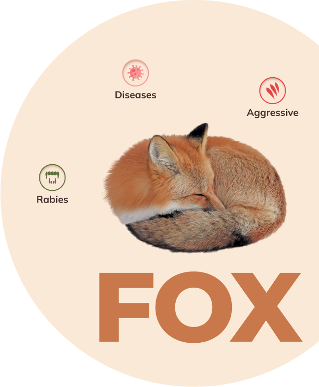

Humane Nuisance Wildlife Removal
Jersey WyldLife LLC is a full-service nuisance wildlife removal company serving Northern
NJ and
surrounding areas. We specialize in wildlife damage management and removal for
residential and
commercial property's and handle all aspects of wildlife control to peacefully resolve
conflicts between people and animals.
Contact Us for all your nuisance
wildlife removal needs.
